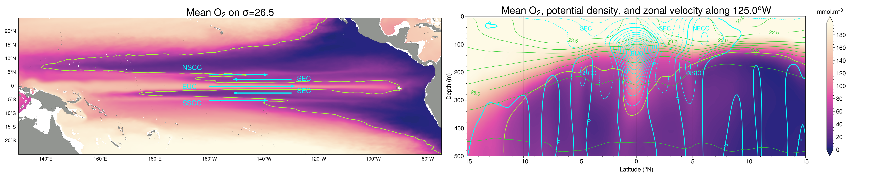

Mean Oxygen Map
Contents
Mean Oxygen Map#
%load_ext autoreload
%autoreload 2
%matplotlib inline
import warnings
warnings.simplefilter("ignore") # Silence warnings
import xarray as xr
import numpy as np
from tqdm import tqdm
import bokeh
import matplotlib.pyplot as plt
import matplotlib.colors as colors
import matplotlib.ticker as mticker
import matplotlib.patches as patches
import cartopy
import cartopy.crs as ccrs
from cartopy import util
from cartopy.mpl.gridliner import LONGITUDE_FORMATTER, LATITUDE_FORMATTER
import cmocean
import pop_tools
from pop_tools import get_grid
import proplot
from utils import *
C=CLSTR(1,25,109,10)
C
Client
Client-d803e2db-f413-11ec-bb43-3cecef1acb68
| Connection method: Cluster object | Cluster type: dask_jobqueue.PBSCluster |
| Dashboard: https://jupyterhub.hpc.ucar.edu/stable/user/yeddebba/proxy/36043/status |
Cluster Info
PBSCluster
34a3eb6b
| Dashboard: https://jupyterhub.hpc.ucar.edu/stable/user/yeddebba/proxy/36043/status | Workers: 0 |
| Total threads: 0 | Total memory: 0 B |
Scheduler Info
Scheduler
Scheduler-8ba5039b-f728-4cb4-a7f7-9322504282c1
| Comm: tcp://10.12.206.46:41019 | Workers: 0 |
| Dashboard: https://jupyterhub.hpc.ucar.edu/stable/user/yeddebba/proxy/36043/status | Total threads: 0 |
| Started: Just now | Total memory: 0 B |
Workers
Read 0.1º CESM Outputs#
path = f'/glade/scratch/yeddebba/Mesoscale/HR/TPAC'
file = f'{path}/*_CLM.nc'
dsu = xr.open_mfdataset(file, decode_times=False, decode_coords=False, data_vars=['UVEL','VVEL','O2','ULAT','ULONG','TLAT','TLONG','z_t'])
dsu
path = f'/glade/scratch/yeddebba/Mesoscale/LR/CLM/'
file = f'{path}/*.CLM.nc'
dsl = xr.open_mfdataset(file, decode_times=False, decode_coords=False, data_vars=['UVEL','VVEL','O2','ULAT','ULONG','TLAT','TLONG','z_t'])
dsl
# path = f'/glade/scratch/yeddebba/TPOSE/'
# file = f'{path}/tpose_[UV]VEL_monthly_2010to2017.nc'
# dst = xr.open_mfdataset(file, decode_times=False, decode_coords=False)
# dst
path = f'/glade/work/yeddebba/BTPOSE/www.ecco.ucsd.edu/DATA/TROPAC/bgc'
file = f'{path}/tpose_201[01234567]_[UV]VEL.nc'
dst = xr.open_mfdataset(file, decode_times=False, decode_coords=False)
dst
path = f'/glade/work/yeddebba/BTPOSE/www.ecco.ucsd.edu/DATA/TROPAC/bgc'
file = f'{path}/tpose_201[01234567]_O2.nc'
dsto = xr.open_mfdataset(file, decode_times=False, decode_coords=False)
dsto
path = f'/glade/work/yeddebba/drifter/drifter_annualmeans.nc'
dd = xr.open_mfdataset({path})
dd
path='/glade/scratch/yeddebba/Mesoscale/OBS/johnson_velocities.cdf'
dj = xr.open_dataset(path, decode_times=False, decode_coords=False)
dj
# Unit Conversion
umol_kg_mmol_m3=1*1.027
ml_l_mmol_m3=44.4
# WOA O2 data from https://www.nodc.noaa.gov/OC5/indprod.html:
path='/glade/scratch/yeddebba/Mesoscale/OBS'
file = f'{path}/WOA2018_O2_clm.nc'
dsw = xr.open_dataset(file, decode_times=False, decode_coords=False)
varname=['o_an','lat','lon','depth']
dsw=dsw.drop([v for v in dsw.variables if v not in varname])
dsw=dsw*umol_kg_mmol_m3
dsw
# Using CARS CSIRO Atlas from: http://www.marine.csiro.au/~dunn/cars2009/
path='/glade/scratch/yeddebba/Mesoscale/OBS'
file = f'{path}/oxygen_cars2009.nc'
dsc = xr.open_dataset(file, decode_times=False, decode_coords=False)
varname=['o2','lat','lon','depth']
dsc=dsc.drop([v for v in dsc.variables if v not in varname])
dsc=dsc*ml_l_mmol_m3
dsc
fig=plt.figure(figsize=(25,5),facecolor='white')
fst=14; fs=12; fsx=10
o2_clr='sunset_r'
omz_clr='lime'
u_clr='cyan'
pd_clr='limegreen'
k=2
rho=1.0265
E=-180-50; W=-75; S=-25; N=25
coor=[E,W,S,N]; D=1; CL=215.0
lon_lab=[120,140,160,180,-160,-140,-120,-100,-80]
lat_lab=np.arange(S,N,10)
lmax=200
lo = 60.; hi = lo ; dc = 0.1; cnlevels = np.arange(lo, hi+dc, dc)
lo = 5.; hi = lo ; dc = 0.1; cnlevels2 = np.arange(lo, hi+dc, dc)
varq=[ds.O2.isel(z_t=15),]
long=[ds.TLONG]
lat=[ds.TLAT]
units='mmol.m$^{-3}$'
ax = plt.subplot(1, 2, 1, projection=ccrs.PlateCarree(central_longitude=180.0))
ax.set_extent([E,W,S,N],crs=cartopy.crs.PlateCarree())
pc= ax.pcolormesh(long[0], lat[0], varq[0],vmin=lmax*0, vmax=lmax, cmap=o2_clr,transform=ccrs.PlateCarree()) #,
pch= ax.contour(long[0], lat[0],varq[0], colors=omz_clr, linewidths=1.0, levels=cnlevels,transform=ccrs.PlateCarree())
ax.set_title(r'Mean O$_2$ on $\sigma$='+str(round((rho-1)*1e3,1)),pad=0.01,fontsize=fst+6,loc='center')
land = ax.add_feature(cartopy.feature.NaturalEarthFeature('physical', 'land', '10m',linewidth=0.1, edgecolor='black', facecolor='grey'))
ax.tick_params(axis='both', labelsize=fst)
gl=ax.gridlines(draw_labels=True)
gl.xlabel_style = {'size': fsx, 'color': 'black'}; gl.ylabel_style = {'size': fsx, 'color': 'black'};
gl.xlabels_top = False; gl.ylabels_right= False; gl.xlines = False; gl.ylines = False
gl.xlocator = mticker.FixedLocator([140,160,180,-160,-140,-120,-100,-80]); gl.ylocator = mticker.FixedLocator(np.arange(S,N,5))
gl.xformatter = LONGITUDE_FORMATTER ; gl.yformatter = LATITUDE_FORMATTER
plt.text(10, 6, 'NSCC', {'color': u_clr, 'fontsize': fst})
plt.arrow(20, 4.2, 20, 0, width=0.3, color=u_clr)
plt.text(10, -7, 'SSCC', {'color': u_clr, 'fontsize': fst})
plt.arrow(20, -5.2, 20, 0, width=0.3, color=u_clr)
plt.text(10, -1, 'EUC', {'color': u_clr, 'fontsize': fst})
plt.arrow(20, 0, 30, 0, width=0.3, color=u_clr)
plt.text(52, 2, 'SEC', {'color': u_clr, 'fontsize': fst})
plt.arrow(50, 2.5, -20, 0, width=0.3, color=u_clr)
plt.text(52, -2.5, 'SEC', {'color': u_clr, 'fontsize': fst})
plt.arrow(50, -2.5, -20, 0, width=0.3, color=u_clr)

savefig(fig,'figure_1')